00:30
UNIX Part 1
File Paths & CLI Basics
Last Time


Data science projects involve dealing with multiple files:
- some files will be inputs
- some files will be outputs
- some files will be data files
- some files will be image files
- some files will be script files (code)
- some files will be reports
- some files will play auxiliary roles
File System Basics
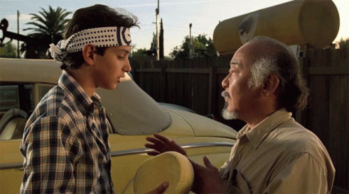
Lesson 1: Learn how to refer to project files
File System (under UNIX-like Operating Systems)
File System
- The file system is a hierarchy (of directories & files)
- Files organized in a tree structure (“inverted tree”)
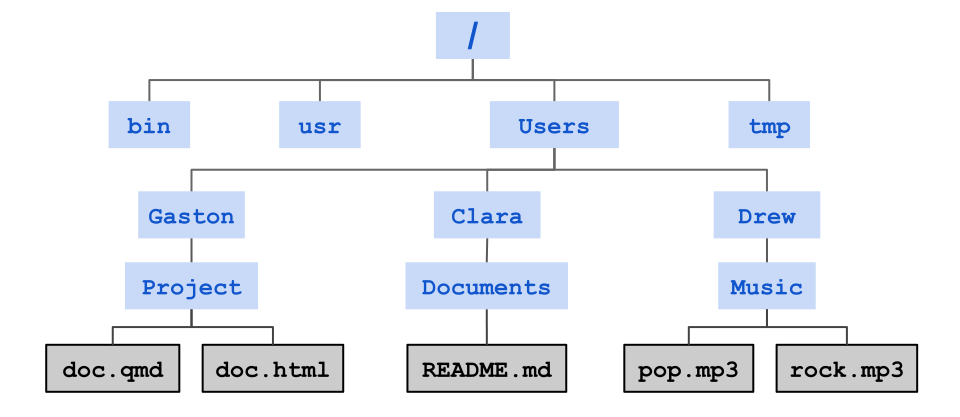
Important File Concepts
- Everything is a File (including directories)
- Folder = Directory
- No concept of “disk”
- At any given time we are inside a directory
- The current directory is the working directory
- From that directory we can move up or down
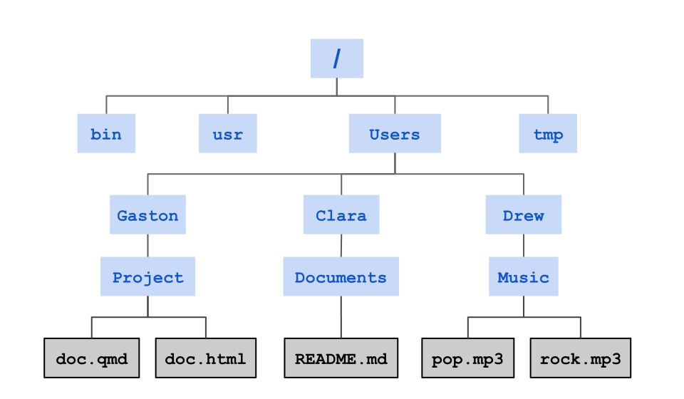
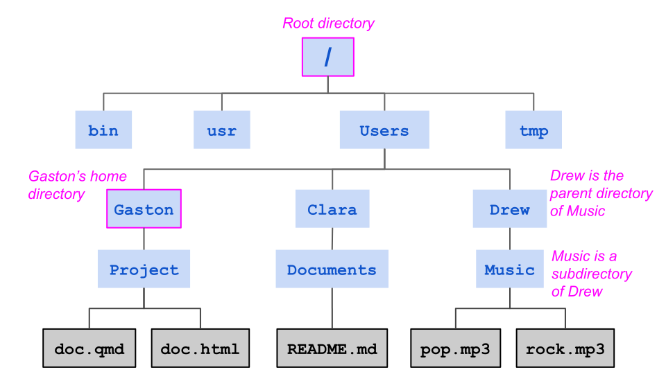
Special Directories
Root directory: the top-level folder in a computer’s file system, acting as the main starting point from which all other directories and files branch out, similar to the trunk of a tree.
Home directory: a user’s personal folder in a multi-user operating system that holds their private files, settings, and data, acting as their default workspace upon login.
Working directory: the specific folder in a computer’s file system where a user is currently working or where a process is executing commands.
File Paths
File Paths
Each file and directory has a unique name in the filesystem called a path.
File paths can be specified in 2 ways:
Absolute Paths: always from the root directory.
Relative Paths: location relative to a working directory.
Special Symbols
| Symbol | Meaning |
|---|---|
/ |
root directory (1st slash) |
A/B |
A contains B (intermediate slash) |
~ |
user’s home directory (i.e. /home/user/) |
. |
current directory |
.. |
parent directory |
File System Example
Example of absolute path
Absolute path to Music/
Example of absolute path
Absolute path to Music/, assuming Drew/ is the home directory
Example of absolute path
Absolute path to pop.mp3
Your Turn
Absolute path to README.md
Example of relative path
Relative path to README.md, assuming working directory is Clara/
Example of relative path
Relative path to README.md, assuming working directory is Drew/
Example of relative path
Relative path to pop.mp3, assuming working directory is Project/
Your Turn
Relative path to doc.qmd, assuming working directory is Documents/
00:30
Advantages of Relative Paths
Portability: Your code works anywhere (your machine, a colleague’s, a web server) without changing paths, as long as the file structure within the project remains consistent.
Flexibility: You can restructure folders within your project.
Self-Contained Projects: Keeps everything needed for the project bundled together.
Simpler References: Shorter paths are quicker to type and less prone to errors than long absolute paths.
Why should we care?
Let’s consider 3 different file structures
In report.qmd we need to import (read in) data.csv. This involves specifying the correct file path.
Scenario A
Scenario A
Scenario B
Scenario B
Scenario C
Scenario C
In Summary
- Everything is a File (including directories).
- Files organized in a tree.
- The filesystem is a hierarchy (of folders & files).
- Folder = Directory
- No concept of “disk”.
- File paths can be specified in 2 ways:
- Absolute Paths: always from the root directory.
- Relative Paths: location relative to a working directory.
- Use relative file paths!
GUI & CLI
GUI
Most of us interact with our operating system through a Graphical User Interface or GUI for short.
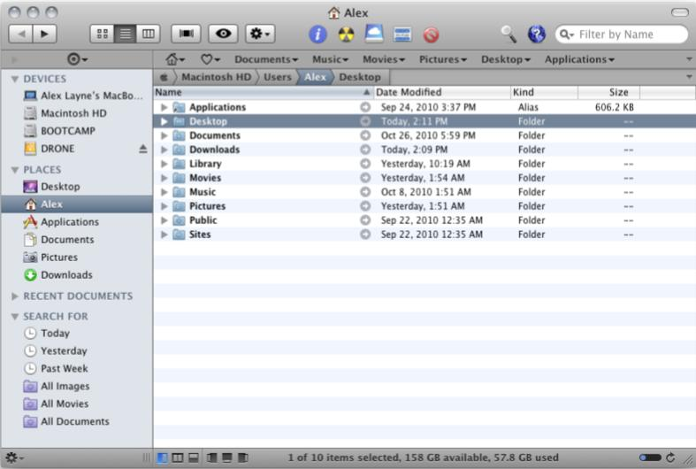
About GUIs
- Easy to learn
- Rely on visual displays
- Have improved the friendliness and usability of computers
- Excellent for:
- Photo editing
- Document Layout
- Browsing the web
- Graphic design
- Watching movies
- Playing Games
GUIs Trade-offs
- They are limiting
- They don’t allow you to have more control over what your computer can do
- Some operations are labor intensive and repetitive
- You use clicking & dragging with the cursor, which reduces reproducibility
- Limit analyses on a cluster of computers
Instead of a GUI, you can use a Command-Line Interface (CLI)
The command line is a text-based interface where you type commands and direct text-based input and output to the screen, to files, or to other programs.
Lesson 2: Learn how to interact with your computer via the CLI
Command Line Interface
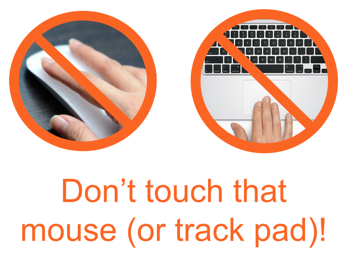
CLIs
- CLI: Command Line Interface.
- Instead of using a GUI we can use a CLI.
- The command-line is a text-based interface.
- By typing commands we perform tasks on the computer.
- CLI’s are one of the earliest ways of interacting with a computer.
- In Unix-like systems, the so-called Terminal functions as a CLI.
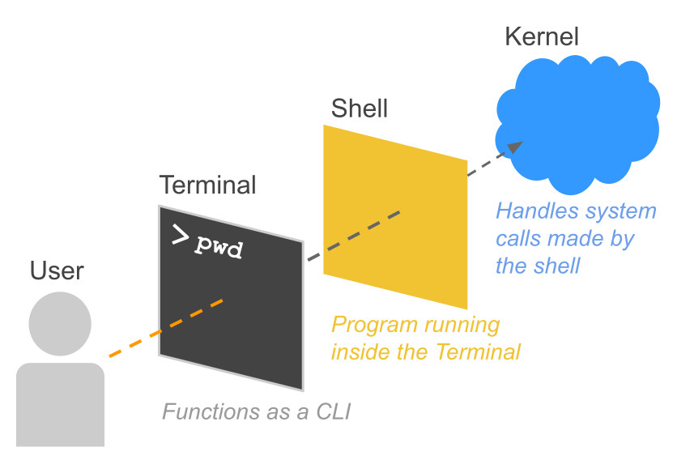
About the Terminal
The Terminal provides a text-based environment that accepts your keyboard input and displays the text output on your screen.
- open windows and tabs
- manage shells
- resize windows
- change colors in windows
- handle copy-paste operations
About the Shell
- The Shell is the actual program running inside the terminal.
- It’s the outer layer of the operating system.
- The shell does 4 simple things:
- displays a prompt in the terminal window (waiting for commands)
- reads your command
- runs the command
- prints the output, if any, to the Terminal window
About the Kernel
- The Kernel is the inner core of the operating system in Unix.
- It takes care of allocating time and memory to programs.
- It does very fundamental root level management.
Example: What happens when you create a folder?
Command like mkdir Photos
The Shell’s Job: You type
mkdir Photosinto your terminal. The shell reads this text, realizes you want to run the “make directory” program, and translates your request into a standard system request (a system call).The Handshake: The shell passes this request across the boundary to the kernel.
The Kernel’s Job: The kernel receives the request. It checks if you have permission to modify the storage. It then talks directly to your Hard Drive or SSD, physically carving out space on the disk to save your new “Photos” folder.
Restaurant Analogy
The Operating System is the entire restaurant.
The Shell is the waiter. It takes your order (commands) and translates it.
The Kernel is the kitchen staff. They actually handle the raw ingredients (hardware, memory) and cook the food.
Notice: The waiter doesn’t talk to “the restaurant”—the waiter talks to the kitchen.
Shell Commands
Commands
Interacting with the Shell requires using commands.
General Command Syntax
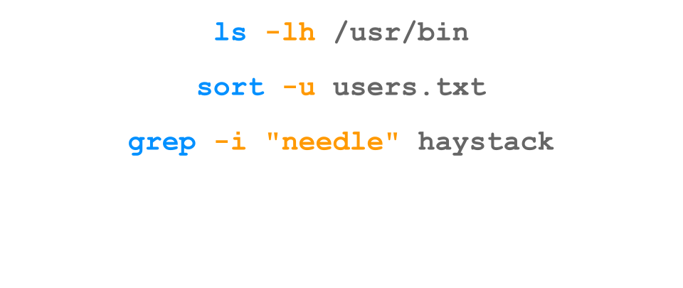
General Command Syntax
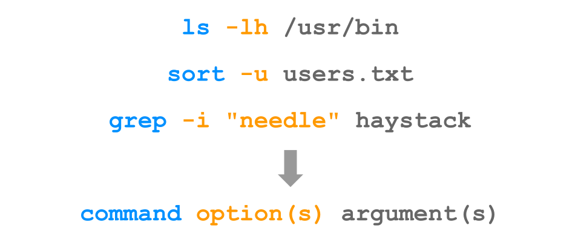
General Command Syntax
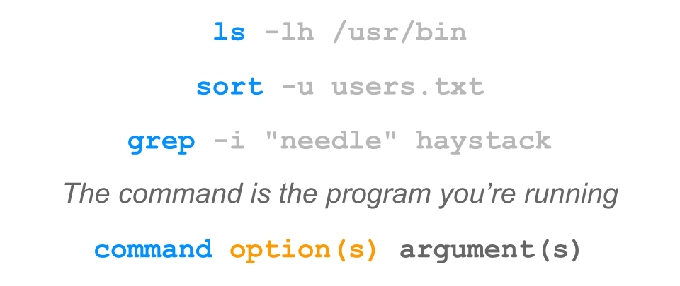
General Command Syntax
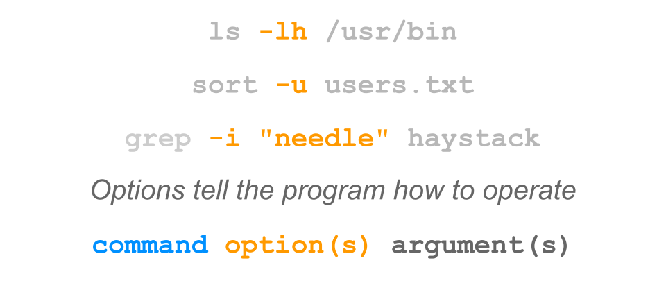
General Command Syntax
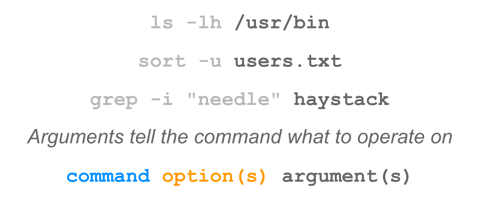
Command Structure
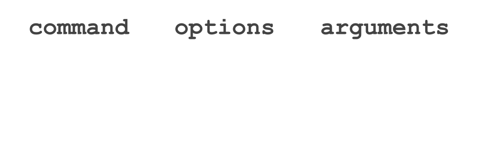
Command Structure
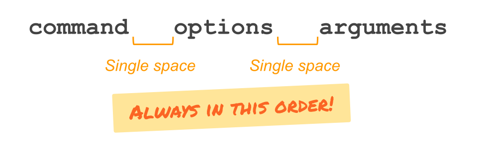
Command Structure
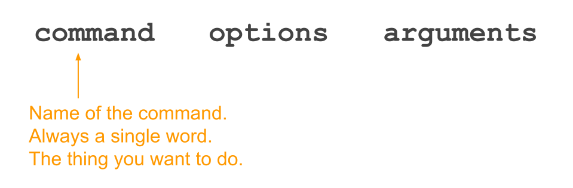
Command Structure
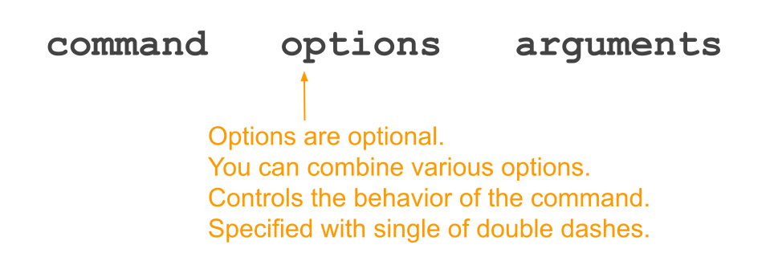
Command Structure
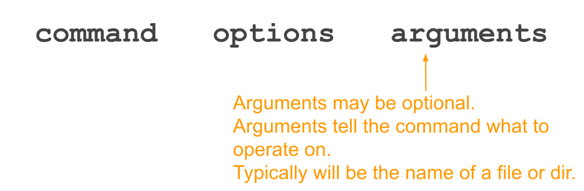
Examples